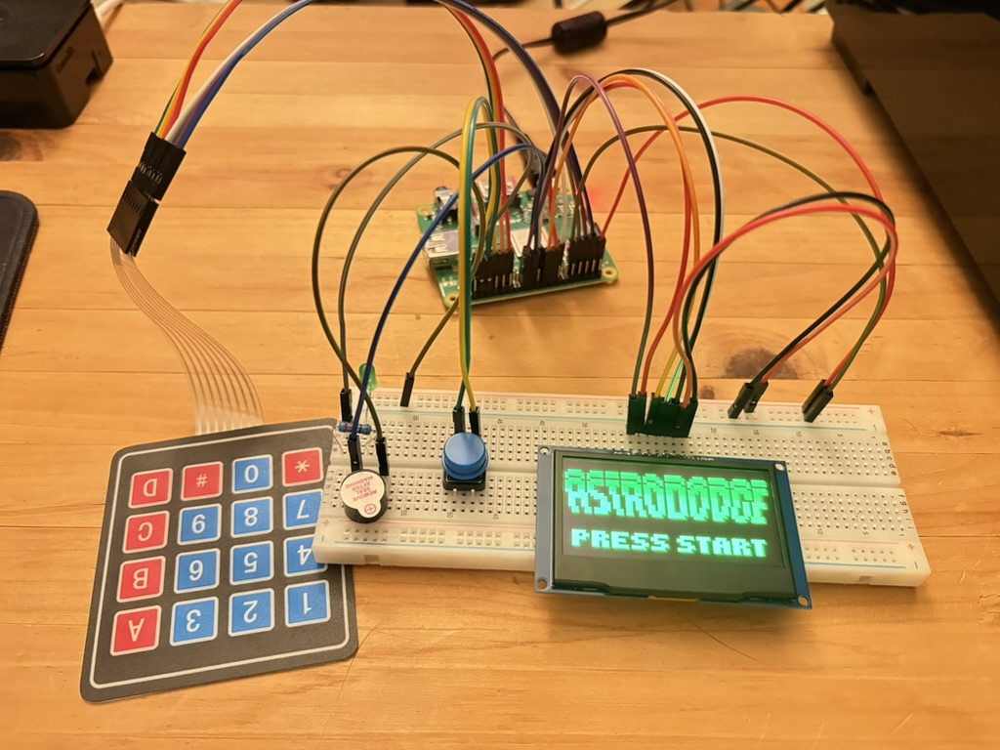
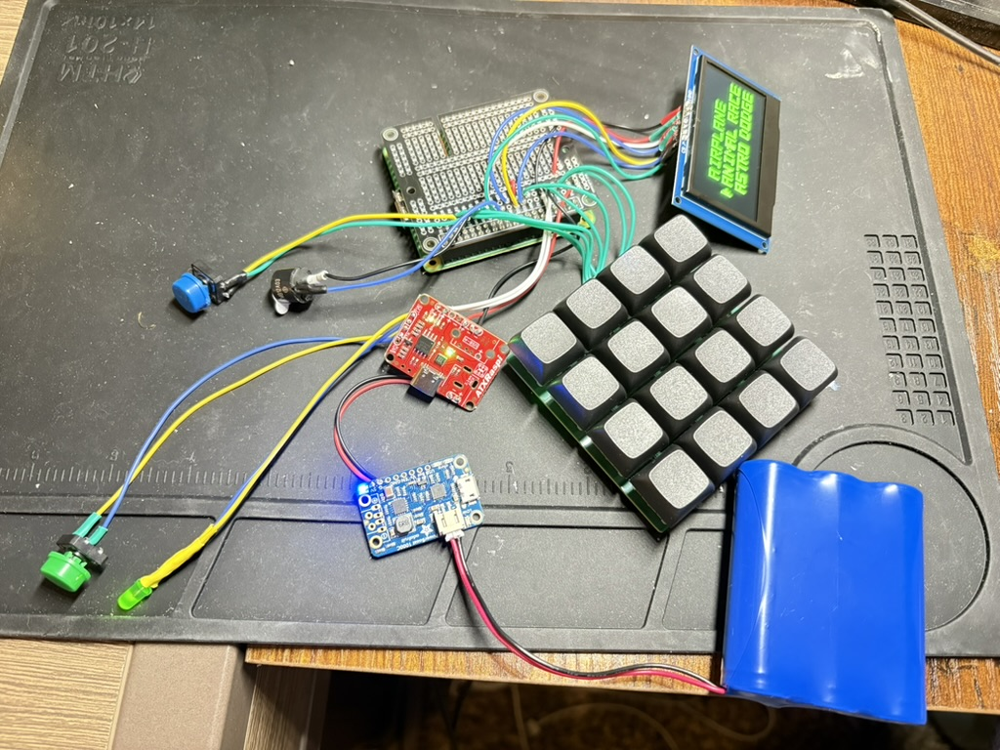
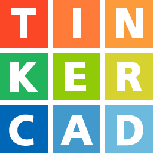

A custom-built handheld console using a Raspberry Pi, OLED display, 4x4 keypad, and a battery
management system for mobile usage and long battery life.
Currently, I have finished all the electronic and software parts of this project, and am
learning how to 3D model a case for 3D printing!
The photos below show some of the important or exciting moments during the development process.

My first successful prototype!

Created a 4x4 keypad with a custom made PCB, and learned how to solder to combine all my parts.
I also added a ATXRaspi, Powerboost 1000C, and lithium ion battery to allow me to turn on and off the Raspberry Pi with a press of a button!
The last thing I needed was a case to make it look presentable!

Currently learning 3D modeling, using Tinkercad to design a case for 3D printing!